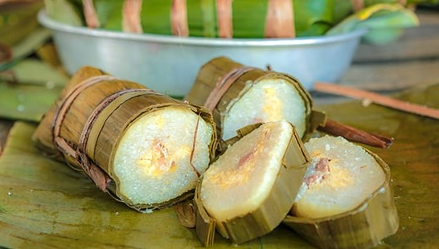

Pork Rice Cake
នំអន្សមជ្រូក
Num Ansom Chrouk is a traditional Khmer sticky rice cake made with glutinous rice, pork belly, and mung beans. The ingredients are carefully wrapped in banana leaves and steamed for several hours, creating a soft, rich, and savory flavor.

Ingredients
-
Step 1: Prepare the rice and beans
- Soak glutinous rice for at least 4 hours
- Soak mung beans for 2-3 hours
- Drain both and set aside
-
Step 2: Prepare the pork
- Cut pork belly into long strips
- Season with black pepper
- Set aside
-
Step 3: Prepare banana leaves
- Clean and cut banana leaves into large pieces
- Soften them by passing over heat or hot water
-
Step 4: Assemble the cake
- Spread a layer of glutinous rice on the banana leaf
- Add a layer of mung beans
- Place pork in the center
- Cover with more mung beans and rice
-
Step 5: Wrap tightly
- Roll the banana leaf into a cylinder shape
- Fold the ends and tie securely with string
-
Step 6: Steam the cakes
- Place the wrapped cakes in a steamer
- Steam for 2-3 hours until fully cooked
-
Step 7: Serve
- Let cool slightly before cutting
- Slice and serve warm or at room temperature